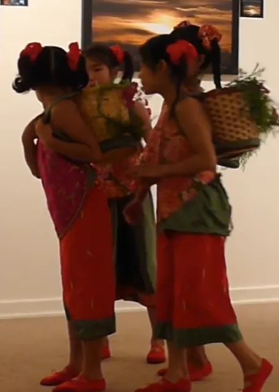
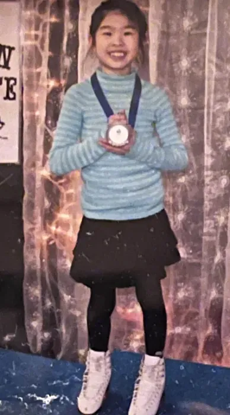
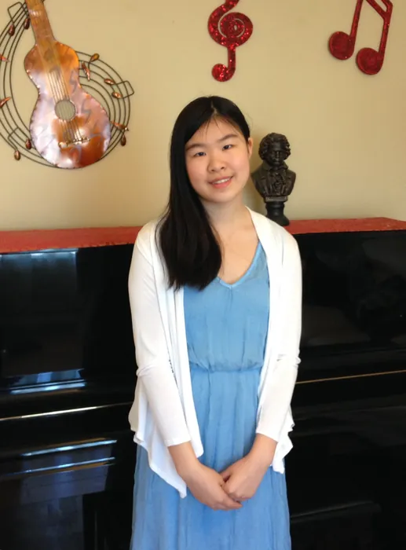

Free time... What's that?
I did multiple extracurriculars as a kid including dance, figure skating, choir, piano, violin, swimming and interactive theater. This was the start of my never ending journey to finding hobbies outside of academics!


